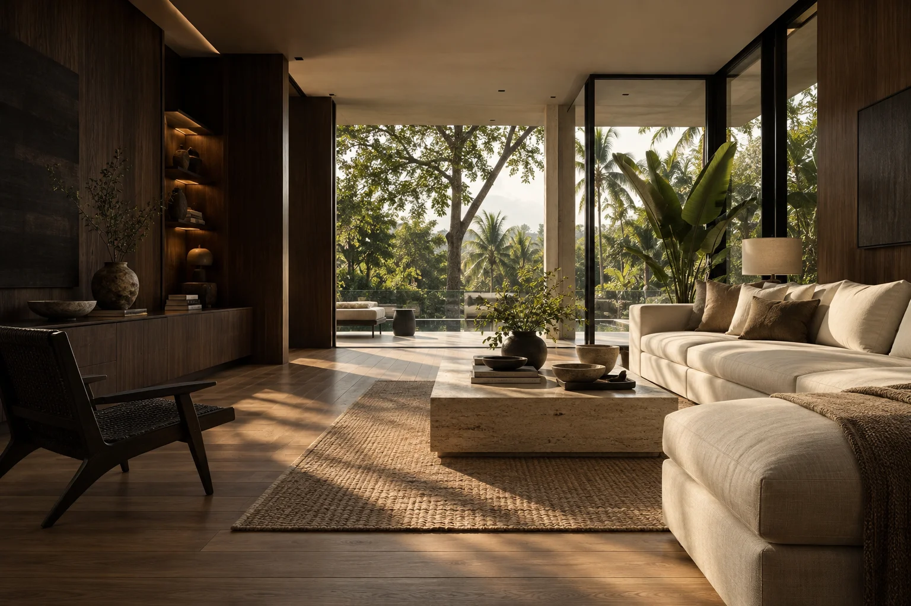
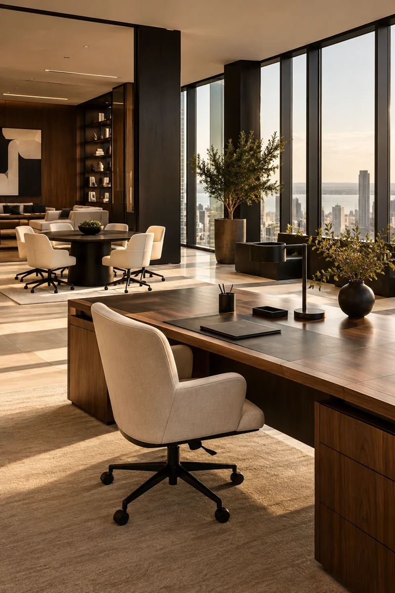
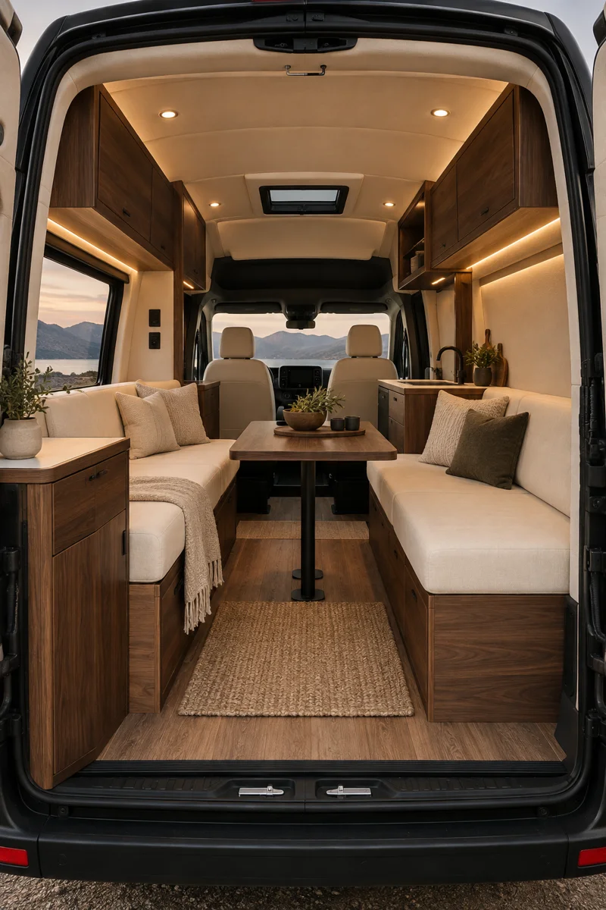
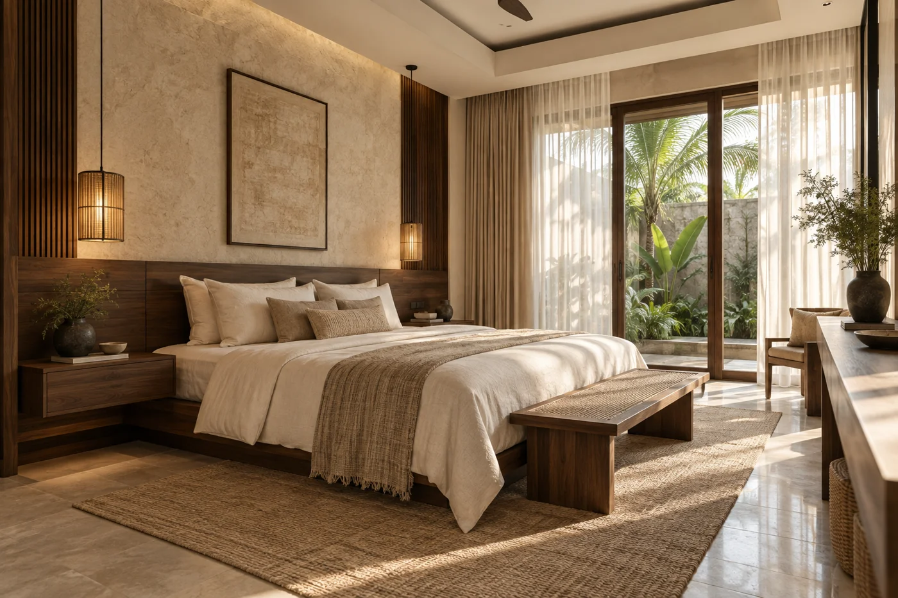
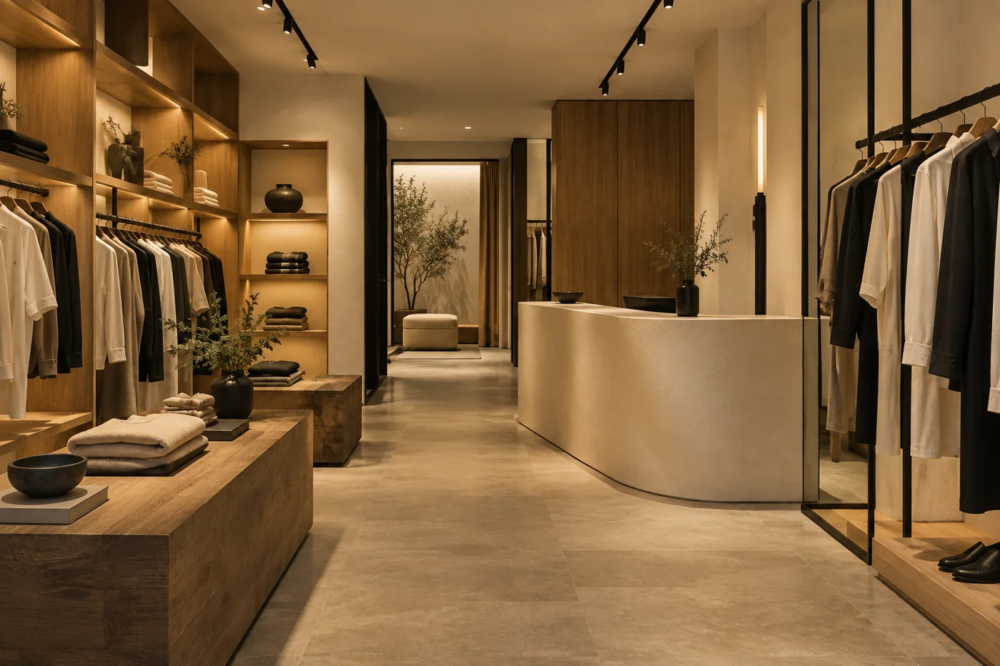
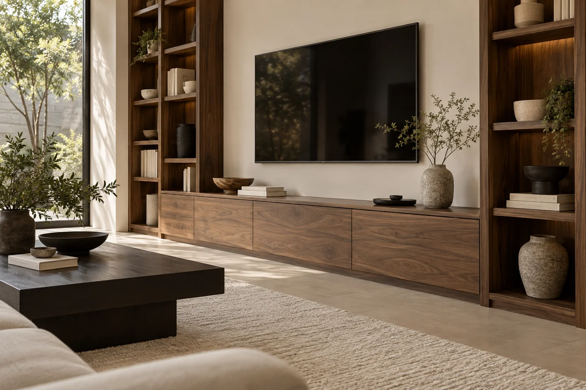
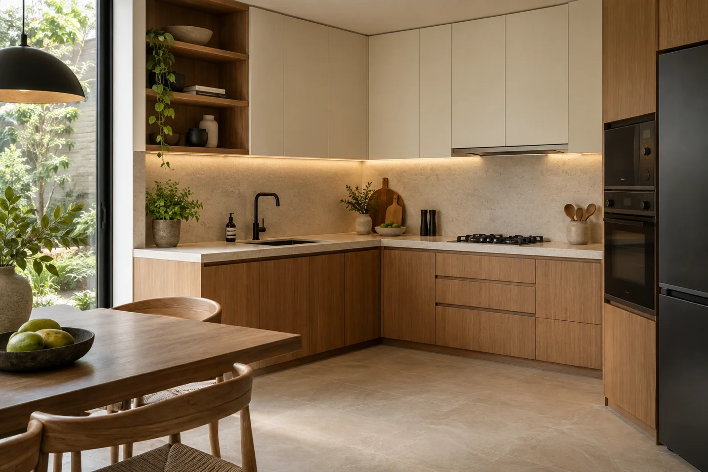

Konsep desain · AI
Interior Rumah
Ruang Keluarga Natural
Ruang keluarga dengan nuansa kayu, tekstur natural, dan pencahayaan lembut.

BANGKIT NATA INTERIOR · INDONESIA
Desain, produksi, dan pengerjaan interior untuk ruang yang Anda bayangkan.
01 / LAYANAN KAMI
Hunian yang nyaman, fungsional, dan personal.

02Ruang kerja sesuai aktivitas dan kebutuhan tim.
 03
03Karakter ruang untuk bisnis Anda.
 04
04Ukuran, fungsi, dan material sesuai kebutuhan.
 05
05Penyimpanan yang tertata. Ruang yang optimal.

06Interior untuk kebutuhan pribadi dan komersial.
Visual konsep AI pada kategori Rumah, Kantor, dan Kendaraan merupakan ilustrasi inspirasi, bukan dokumentasi proyek Bangkit Nata.
02 / PORTFOLIO PILIHAN
Dokumentasi asli pekerjaan interior kami.
Jelajahi portfolio ↗EKSPLORASI DESAIN
Konsep desain orisinal yang divisualisasikan dengan AI untuk membantu Anda membayangkan berbagai kemungkinan interior. Gambar-gambar ini bukan foto hasil pekerjaan, proyek klien, atau dokumentasi pembangunan Bangkit Nata Interior.
Interior Rumah
Ruang keluarga dengan nuansa kayu, tekstur natural, dan pencahayaan lembut.

Konsep desain · AIInterior Rumah
Inspirasi kamar tidur dengan penyimpanan terintegrasi dan palet warna tenang.
Interior Kantor
Inspirasi ruang kerja dengan area diskusi dan material bernuansa hangat.

Konsep desain · AIToko / Komersial
Konsep display produk dan sirkulasi pengunjung untuk ruang retail.

Konsep desain · AICustom Furniture
Eksplorasi kabinet media dan rak yang menyatu dengan karakter ruang.

Konsep desain · AIKitchen Set
Konsep dapur dengan kabinet custom dan penataan area kerja yang praktis.
Interior Kendaraan
Eksplorasi kabin kendaraan dengan tempat duduk dan penyimpanan terintegrasi.
DETAIL PROYEK / KOHIYA COFFEE03 / TENTANG BANGKIT NATA
Bangkit Nata Interior menghadirkan solusi desain, produksi, dan pengerjaan interior custom untuk rumah, kantor, bisnis, kendaraan, serta berbagai kebutuhan interior di seluruh Indonesia.
Kami membantu dari tahap perencanaan hingga produksi dan instalasi. Setiap proyek disesuaikan dengan fungsi, ukuran ruang, kebutuhan, dan karakter Anda.
Kenali Bangkit Nata Interior ↗04 / PROSES KERJA
Ceritakan kebutuhan, karakter ruang, dan rencana anggaran Anda.
Diskusikan konsep, ukuran, material, dan lingkup pekerjaan.
Pengerjaan interior dan furniture mengikuti detail yang disepakati.
Penataan dan pemasangan untuk mewujudkan ruang yang direncanakan.
MULAI DARI SEBUAH PERCAKAPAN